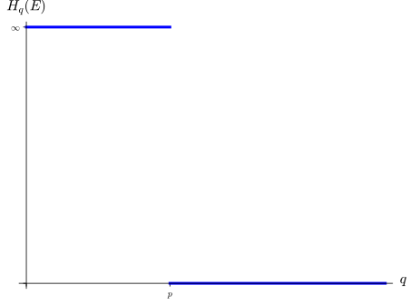

Section 3.1 Hausdorff measures
For most of what we have done so far, we have worked with a measurable space, and finite number of measures on the space. That finite measure has usually been one, but occasionally we have looked at two or three measures simultaneously. Things will be different in this chapter. We will define a family of measures \(\{H_p\}_{p\geq 0}\) on a fixed \(\bR^n\text{.}\) Give a bounded \(E \subseteq \bR^n\text{,}\) we are not so much interested in \(H_p(E)\) for fixed \(p\text{;}\) we are interested in finding which \(p\) satisfies \(0\lt H_p(E) \lt\infty.\) We will not, usually, be interested in the exact value of \(H_p(E)\text{.}\)
For a set \(B \subseteq \bR^n\text{,}\) we define the diameter of \(B\) to be
\begin{gather*}
\diam(B) = \sup\{\|x-y\|_2 \colon x,y \in B\}.
\end{gather*}
For \(p\geq 0\) and \(\delta \gt 0\text{,}\) define a map on the subsets \(B\) of \(\bR^n\) with \(\diam(B)\lt \delta\) by
\begin{equation*}
B \mapsto \diam(B)^p.
\end{equation*}
Let \(H_{p,\delta}\) be the outer measure induced by this map. Thus, for \(E \subseteq \bR^n\text{,}\)
\begin{equation*}
H_{p,\delta}(E) = \inf\left\{\sum_{k=1}^\infty\diam(B_k)^p \colon E \subseteq \bigcup_{k=1}^\infty B_k,\ \diam(B_k)\lt \delta \right\}.
\end{equation*}
Note that if \(\delta_1\lt \delta_2\) and \(E \subseteq \bR^n\text{,}\) then \(H_{p,\delta_2}(E) \leq H_{p,\delta_1}(E)\text{.}\) This \(H_{p,\delta}(E)\) increases as \(\delta\) decreases. Define, for all \(E \subseteq \bR^n\)
\begin{equation*}
H_p(E) = \lim_{\delta\rightarrow 0^+}H_{p,\delta}(E).
\end{equation*}
Proof.
Fix \(p \geq 0.\) Clearly \(H_p(\emptyset)=0\text{,}\) so we only need to show that \(H_p\) is countably monotone. Take \(E\subseteq \bR^n\) and sets \(\{E_k\}_{k=1}^\infty\) such that \(E \subseteq \bigcup_{k=1}^\infty E_k.\) Then, since \(H_{p,\frac{1}{n}}\) is an outer measure for each \(n\text{,}\)
\begin{align*}
H_p(E)=\amp \lim_{n\rightarrow\infty} H_{p,\frac{1}{n}}(E)\\
\leq\amp \lim_{n\rightarrow\infty} \sum_{k=1}^\infty H_{p,\frac{1}{n}}(E_k)\\
= \amp \sum_{k=1}^\infty \lim_{n\rightarrow\infty} H_{p,\frac{1}{n}}(E_k)\\
= \amp \sum_{k=1}^\infty H_p(E_k),
\end{align*}
where the penultimate equality (the interchanging of the sum and the limit) comes from the Monotone Convergence Theorem. Thus \(H_p\) is countably monotone, and therefore \(H_p\) is an outer measure on \(\bR^n\text{.}\)
Definition 3.1.2.
For \(p \geq 0\) the outer measure \(H_p\) on subsets of \(\bR^n \)is called the Hausdorff outer measure of dimension \(p\) on \(\bR^n\text{.}\)
We now have a family of outer measures \(\{H_p\}_{p\geq 0}\) on \(\bR^n\text{.}\) By restricting \(H_p\) to the \(H_p\)-measurable sets, we have a family of measures on \(\bR^n\text{.}\) It is not clear if these measures act on the same \(\sigma\)-algebra of measurable sets. That is, if \(p \neq q\text{,}\) it is not clear that the \(H_p\)-measurable sets coincide with the \(H_q\)-measurable sets. However, we will see that Borel sets in \(\bR^n\) are \(H_p\)-measurable for all \(p\geq 0\text{.}\) Thus, the measures \(\{H_p\}_{p\geq 0}\) define a family of measures, called the Hausdorff measures of dimension \(p\), on the \(\sigma\)-algebra of Borel sets in \(\bR^n\text{.}\)
Lemma 3.1.3.
Let \(X,Y \subseteq \bR^n\) and fix \(p\geq 0\text{.}\) If
\begin{equation*}
\dist(X,Y):=\sup\{\|x-y\| \colon x\in X,\ y\in Y\} \gt 0
\end{equation*}
then \(H_p(X\cup Y) = H_p(X) + H_p(Y).\)
Proof.
Take \(\delta \gt 0\) with \(\delta \lt \dist(X,Y).\) Let \(\{C_k\}_{k=1}^\infty\) be a countable collection of subsets of \(\bR^n\) with \(\diam(C)\lt \delta\) such that
\begin{equation*}
X \cup Y \subseteq \bigcup_{k=1}^\infty C_k.
\end{equation*}
Assume that \(C_k \cap (X \cup Y) \neq \emptyset\) for all \(k\) (we can remove any \(C_k\) with empty intersection with \(X \cup Y\) and not increase the estimate of \(H_p(X\cup Y)\) that the \(\{C_k\}_{k=1}^\infty\) define). Note, since \(\delta \lt \dist(X,Y),\) if \(C_k \cap X \neq \emptyset\) then \(C_k \cap Y = \emptyset\text{;}\) and if \(C_k \cap Y \neq \emptyset\) then \(C_k \cap X = \emptyset\text{.}\) Thus, the collection \(\{C_k\}_{k=1}^\infty\) splits into two disjoint collections \(\{C_k\}_{C_k \cap X \neq \emptyset}\) and \(\{C_k\}_{C_k \cap Y \neq \emptyset},\) with
\begin{equation*}
X \subseteq \bigcup_{C_k \cap X \neq \emptyset}C_k \text{ and } Y \subseteq \bigcup_{C_k \cap Y \neq \emptyset}C_k.
\end{equation*}
Hence
\begin{equation*}
\sum_{k=1}^\infty \diam(C_k)^p \geq H_{p,\delta}(X) + H_{p,\delta}(Y).
\end{equation*}
Taking the infimum over all such families \(\{C_k\}_{k=1}^\infty\text{,}\) gives \(H_{p,\delta}(X\cap Y) \geq H_{p,\delta}(X) + H_{p,\delta}(Y).\) Since \(H_p\) is an outer measure, it follows that \(H_{p,\delta}(X\cap Y) = H_{p,\delta}(X) + H_{p,\delta}(Y).\) This equation holds for all \(\delta \lt \dist(X,Y)\) thus, taking the limit as \(\delta \rightarrow 0\text{,}\) we get \(H_{p}(X\cap Y) = H_{p}(X) + H_{p}(Y).\)
Lemma 3.1.4.
Let \(H_p\) be a Hausdorff outer measure on \(\bR^n\) for some \(p \geq 0\text{,}\) and let \(E \subseteq \bR^n\) be a Borel set. Then \(E\) is measurable with respect to \(H_p\text{.}\)
Proof.
It suffices to show the closed sets are measurable, since the Borel sets are generated as a \(\sigma\)-algebra by the closed sets of \(\bR^n\text{.}\) Further, since any closed set in \(\bR^n\) is a countable union of closed sets, it suffices to prove the result for closed bounded sets. Let \(F \subseteq \bR^n\) be a closed bounded set. We will show that \(F\) is measurable with respect to the outer measure \(H_p\text{.}\)
Let \(E \subseteq \bR^n\) be a set \(H_p(E)\lt \infty\text{.}\) Note that, if \(x \in E \backslash F\) then, since \(F\) is closed, \(\dist(x,F)\gt 0\text{.}\) For each positive integer \(n\) let
\begin{equation*}
B_n = \{x \in E\backslash F \colon \dist(x,F)\geq 1/n.\}
\end{equation*}
By Lemma 3.1.3, since \(\dist(F,B_n)\geq \frac{1}{n}\text{,}\) \(H_p(F\cup B_n)=H_p(F)+H_p(B_n).\) Thus,
\begin{equation}
H_p(E)\geq H_p(B_k \cup (F\cap E)) = H_p(B_k)+H_p(F\cap E)\tag{3.1}
\end{equation}
for all \(k\text{.}\) The result will be proved once we show that \(\lim_k H_p(B_k)=H_p(E\backslash F)\). For each \(k\text{,}\) let \(C_k = B_{k}\backslash B_{k-1}.\) Note, if \(x \in C_{k+2}\) and \(y \in B_k\) then
1
This looks a lot like continuity of measure. But we cannot apply continuity of measure here. There is no reason to believe that sets \(\{B_k\}_{k=1}^\infty\) are measurable with respect to \(H_p\text{.}\)
\begin{align*}
\frac{1}{k+2} \amp\leq \dist(x,F)\lt \frac{1}{k+1}, \text{ and}\\
\frac{1}{k}\amp\leq \dist(y,F)
\end{align*}
and so
\begin{equation*}
\|y-x\|_2 \geq \dist(y,F) - \dist(x,F) \geq \frac{1}{k}-\frac{1}{k+1}=\frac{1}{k(k+1)}.
\end{equation*}
Thus, when \(k\neq m\text{,}\) \(\dist(C_{2k},C_{2m})\gt 0\) and \(\dist(C_{2k+1},C_{2m+1})\gt 0\text{.}\) Hence, by Lemma 3.1.3, for all \(m\)
\begin{align*}
\sum_{k=1}^m H_p(C_{2k}) \amp= H_p\left( \bigcup_{k=1}^m C_{2k}\right) \leq H_p(E\backslash F)\lt \infty \text{ and}\\
\sum_{k=1}^m H_p(C_{2k+1}) \amp= H_p\left( \bigcup_{k=1}^m C_{2k+1}\right) \leq H_p(E\backslash F)\lt \infty.
\end{align*}
Thus the series \(\sum_{k=1}^\infty H_p(C_{2k})\) and \(\sum_{k=1}^\infty H_p(C_{2k+1})\) are both convergent. Take \(\varepsilon\gt 0\) and choose \(K\) so that \(\sum_{k\geq K+1}^\infty H_p(C_k)\lt \varepsilon.\) As, for each \(m\)
\begin{equation*}
E\backslash F = \bigcup_{k=1}^\infty B_k = B_m \cup \bigcup_{k\geq m+1}C_k
\end{equation*}
it follows that if \(m \geq K\text{,}\) then
\begin{equation*}
H_p(B_m)\leq H_p(E\backslash F)\leq H_p(B_m) + \sum_{k\geq K+1}^\infty H_p(C_k) \lt H_p(B_m) + \varepsilon.
\end{equation*}
Hence, \(\lim_k H_p(B_k) = H_p(E\backslash F)\text{,}\) and so by (3.1)
\begin{equation*}
H_p(E)\geq H_p(E\cap F) + H_p(E\backslash F).
\end{equation*}
Hence \(F\) is \(H_p\)-measurable, completing the proof.
Remark 3.1.5.
For each \(p\gt 0\text{,}\) we have shown that \(H_p\) defines a measure on the Borel sets of \(\bR^n\text{.}\) This does not mean that \(H_p\) is a Borel measure. Recall, that a measure \(\mu\) on Borel sets is a Borel measurse if \(\mu(K)\lt \infty\) for all compact sets \(K\text{.}\) We will see that for a compact set \(K\subseteq \bR^n\) it is possible to have \(H_p(K)=\infty.\)
2
Some authors do not have the “finite on compact sets” stipulation as part of the definition of a Borel measure, so you may see the Hausdorff measures being referred to as Borel measures in other texts.
As stated earlier, we are not (usually) interested in a single one of the measures \(H_p\text{.}\) For a fixed \(E\subseteq \bR^n\) we are interested in for which \(p\) is \(H_p(E)\lt \infty,\) and for which \(p\) is \(H_p(E)\gt E\text{.}\) The next proposition sheds significant light on these problems.
Proposition 3.1.6.
Let \(E \subseteq \bR^n\) be a Borel set.
-
If \(q\gt p\) and \(H_p(E)\lt \infty \text{,}\) then \(H_q(E)=0\text{.}\)
-
If \(q\lt p\) and \(H_p(E)\gt 0\text{,}\) then \(H_q(E) = \infty.\)
Proof.
Suppose \(H_p(E)\lt \infty\) and \(q \gt p\text{.}\) Take \(\varepsilon \gt 0\) and \(\delta \gt 0\text{.}\) Now choose sets \(\{C_k\}_{k=1}^\infty\) with \(\diam(C_k)\lt \delta\) for each \(k\) such that \(E \subseteq \bigcup_{k=1}^\infty C_k\) and
\begin{equation*}
H_{p,\delta}(E) \gt \sum_{k=1}^\infty \diam(C_k)^p - \varepsilon.
\end{equation*}
We have now that
\begin{align*}
H_{q,\delta}(E)\leq\sum_{k=1}^\infty \diam(C_k)^q \amp= \sum_{k=1}^\infty\diam(C_k)^{q-p} \diam(C_k)^p\\
\amp \leq \delta^{q-p}\sum_{k=1}^\infty\diam(C_k)^p \\
\amp \lt\delta^{q-p}(H_{p,\delta}(E) + \varepsilon) \\
\amp \leq \delta^{q-p}(H_{p}(E) + \varepsilon)
\end{align*}
Since \(H_p(E)\lt \infty\text{,}\) it follows that
\begin{equation*}
H_q(E) = \lim_{\delta\rightarrow0^+} H_{q,\delta}(E) \leq \lim_{\delta\rightarrow0^+}\delta^{q-p}(H_{p}(E) + \varepsilon) = 0.
\end{equation*}
The second statement is the contrapositive of the first, and thus the result is proved.
Fix\(E \subseteq \bR\text{.}\) From Proposition 3.1.6, we see that there is a \(q\gt 0\) such \(H_p(E)=\infty\) for \(p\lt q\text{,}\) and \(H_p(E)=0\) for \(p \gt q.\) This is illustrated in Figure 3.1.7. Thus the following definition is well defined.

A graph of \(H_q(E)\) against \(q\text{.}\) The picture shows a horizontal line above the \(x\)- axis marked \(\infty\) between \(0\) and a point \(p\text{;}\) after \(p\) the graph is the line \(H_q(E) = 0.\)
Definition 3.1.8.
Let \(E \subseteq \bR^n\) be a Borel set. If \(p \geq 0\) satisfies
\begin{equation*}
p = \inf\{ q \colon H_q(E)=0\} (= \sup \{q \colon H_q(E)=\infty\})
\end{equation*}
we say that \(E\) has Hausdorff dimension \(p\text{.}\) We write this as
\begin{equation*}
\dim_H(E) = p.
\end{equation*}